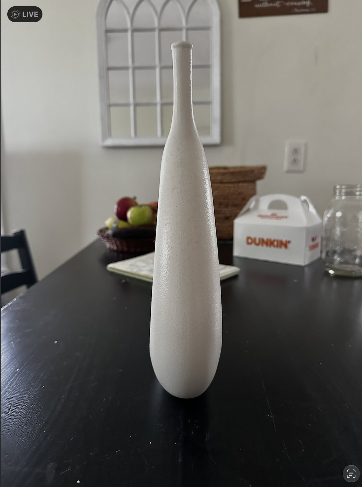

The first step in making a 3D model of a real object is to take pictures or find reference images for the the most important angles such as the front (figure 1), side (figure 2), top, and bottom. Also, finding references for similar or related objects will be important since curved and complex models can be overwhelming given the number of elements and subtleties of their geometry.


I chose an object in my home, meaning refererence images are easily accesible. I captured a front and a side image since the object has symmetry on two axis and has largely predictable geometry.
I uploaded my reference images into Blender and prepared for the next step: